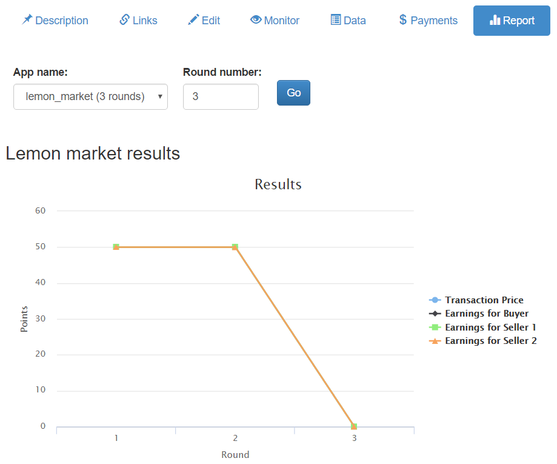

Admin
oTree’s admin interface lets you create, monitor, and export data from sessions.
Open your browser to localhost:8000 or whatever you server’s URL is.
Password protection
When you first install oTree, The entire admin interface is accessible without a password. However, when you are ready to deploy to your audience, you should password protect the admin.
If you are launching an experiment and want visitors to only be able to
play your app if you provided them with a start link, set the
environment variable OTREE_AUTH_LEVEL to STUDY.
To put your site online in public demo mode where
anybody can play a demo version of your game
(but not access the full admin interface), set OTREE_AUTH_LEVEL
to DEMO.
The normal admin username is “admin”.
You should set your password in the OTREE_ADMIN_PASSWORD environment variable
(on Heroku, log into your Heroku dashboard, and define it as a config var).
If you change the admin username or password, you need to reset the database.
Start links
There are multiple types of start links you can use.
Rooms
In most cases where you are doing a study, the best way to set up URLs is to make a room.
Single-use links
If a room is not suited for your needs, you can use oTree’s single-use links. Every time you create a session, you will need to re-distribute URLs to each participant.
Session-wide link
The session-wide link lets you provide
the same start link to all participants in the session.
Note: this may result in the same participant playing twice, unless you use the
participant_label parameter in the URL (see Participant labels).
Before using the session-wide link, consider using a room, because you can also use a room without a participant label file to allow everyone to play with the same URL. The advantage of using a room is that the URL is simpler to type (doesn’t contain a randomly generated code), and you can reuse it across sessions.
Participant labels
Whether or not you’re using a room,
you can append a participant_label parameter to each participant’s start
URL to identify them, e.g. by name, ID number, or computer workstation.
For example:
http://localhost:8000/room/my_room_name/?participant_label=John
oTree will record this participant label. It
will be used to identify that participant in the
oTree admin interface and the payments page, etc.
You can also access it from your code as participant.label.
Another benefit of participant labels is that if the participant opens their start link twice, they will be assigned back to the same participant (if you are using a room-wide or session-wide URL). This reduces duplicate participation.
Arrival order
oTree will assign the first person who arrives to be P1, the second to be P2, etc., unless you are using single-use links.
Customizing the admin interface
You can customize what data is shown in the admin interface.
For basic customization, you can define ADMIN_VIEW_FIELDS in your constants class.
For advanced customization, you can create a custom “admin report” tab.
ADMIN_VIEW_FIELDS
Note
To use this, you must install oTree 6.0
You can choose what fields are shown in the admin’s “Session Data” view,
to focus on the important fields and ignore the rest.
Define ADMIN_VIEW_FIELDS in your constants class.
It can have 'player', 'group', and 'subsession' keys.
class C(BaseConstants):
...
ADMIN_VIEW_FIELDS = {
'player': ['guess', 'is_winner', 'payoff'],
# 'group': [...],
# 'subsession': [...],
}
Admin reports
You can add a custom tab to a session’s admin page with any content you want; for example:
A chart/graph with the game’s results
A custom payments page that is different from oTree’s built-in one
Here is a screenshot:

Here is a trivial example, where we add an admin report that displays a sorted list of payoffs for a given round.
First, define a function vars_for_admin_report.
This works the same way as vars_for_template().
For example:
def vars_for_admin_report(subsession):
payoffs = sorted([p.payoff for p in subsession.get_players()])
return dict(payoffs=payoffs)
Then create an includable template admin_report.html
in your app, and display whatever variables were passed in vars_for_admin_report:
<p>Here is the sorted list of payoffs in round {{ subsession.round_number }}</p>
<ul>
{{ for payoff in payoffs }}
<li>{{ payoff }}</li>
{{ endfor }}
</ul>
Notes:
subsession,session, andCare passed to the template automatically.admin_report.htmldoes not need to use{{ block }}. The above example is valid as the full contents ofadmin_report.html.
If one or more apps in your session have an admin_report.html,
your admin page will have a “Reports” tab. Use the menu to select the app
and the round number, to see the report for that subsession.
Export Data
In the admin interface, click on “Data” to download your data as CSV or Excel.
There is also a data export for “page times”, which shows the exact time when users completed every page.
Here is a Python script you can run that tabulates how much time
is spent on each page. You can modify this script to calculate similar things, such as how much time each
participant spends on wait pages in total.
Custom data exports
You can make your own custom data export for an app.
In oTree Studio, go to the “Player” model and click on “custom_export” at the bottom.
(If using a text editor, define the below function.)
The argument players is a queryset of all the players in the database.
Use a yield for each row of data.
def custom_export(players):
# header row
yield ['session', 'participant_code', 'round_number', 'id_in_group', 'payoff']
for p in players:
participant = p.participant
session = p.session
yield [session.code, participant.code, p.round_number, p.id_in_group, p.payoff]
Or, you can ignore the players argument and export some other data instead, e.g.:
def custom_export(players):
# Export an ExtraModel called "Trial"
yield ['session', 'participant', 'round_number', 'response', 'response_msec']
# 'filter' without any args returns everything
trials = Trial.filter()
for trial in trials:
player = trial.player
participant = player.participant
session = player.session
yield [session.code, participant.code, player.round_number, trial.response, trial.response_msec]
Once this function is defined, your custom data export will be available in the regular data export page.
Multiple custom_export functions
Note
To use this, you must install oTree 6.0
You can define multiple custom export functions; just make sure they all start with custom_export;
e.g. def custom_export_xyz(players):.
Debug Info
When oTree runs in DEBUG mode (i.e. when the environment variable
OTREE_PRODUCTION is not set), debug information is displayed
on the bottom of all screens.
Payments
If you define a participant field called finished,
then you can set participant.finished = True when a participant finishes the session,
and this will be displayed in various places such as the payments page.